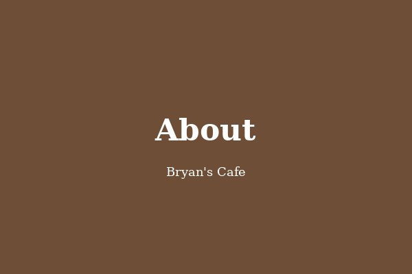
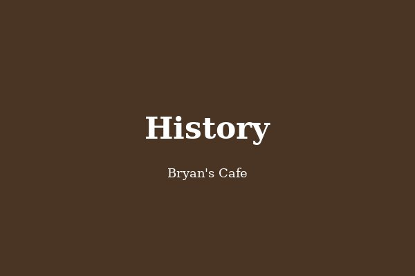

About Us
Bryan's Café is a community-driven coffee house dedicated to bringing carefully sourced beans, fresh local produce and warm hospitality to every customer who walks through our doors.
From the moment you arrive, you become part of our story — a story built on quality ingredients, passionate baristas and recipes refined over more than a decade. Whether you're stopping in for a quick espresso or settling in for a long brunch, every visit is crafted to feel personal.
We work directly with growers and small-batch roasters across Australia and the Pacific, ensuring traceability from crop to cup. Our food menu is updated seasonally with locally-sourced produce, and our team is happy to accommodate dietary preferences.

Our History
Founded in 2012 by Bryan Mitchell in a small Sydney laneway, Bryan's Café started as a single espresso bar with a clear mission: to serve great coffee in a space that felt like home.
What began as a six-seat shop quickly grew into a beloved local institution. By 2016 we had opened our second location in Parramatta, and in 2020 we expanded to Bondi to bring our specialty blends to Sydney's beachside community.
Today, with three branches across Sydney, our values remain the same as on day one — honest food, ethically-sourced coffee and genuine connection with the people we serve.
